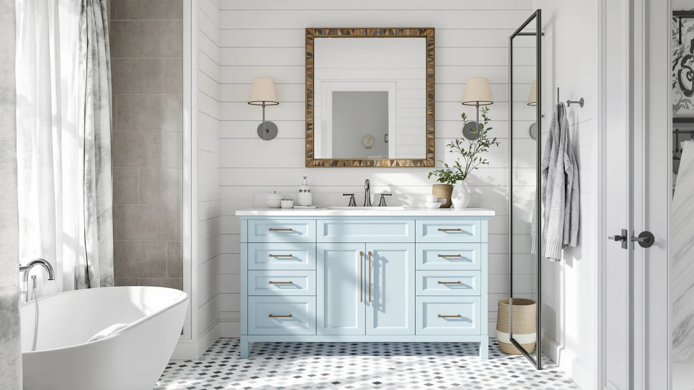

T4TREAM 60 Inch Modern Review (2026): Worth It?
Prices and picks verified as of November 2026. Independent, reader-supported reviews.


Quick Answer
The T4TREAM 60 Inch Modern Bathroom is the only true 60 inch modern-style vanity among the four listings compared here, and it costs within six dollars of every farmhouse alternative. It does not yet carry a public rating, so buyers who want a proven track record should weigh the AmbroVania's 4.7-rated alternative below first.
Our pick: T4TREAM 60 Inch Modern Bathroom, $485.99 Check Price on Amazon
Bottom line: our top pick is the T4TREAM 60 Inch Modern Bathroom Vanity with Double Sink at $485.99.
Things to Know Before You Buy
- Price is not the deciding factor here: the T4TREAM, at $485.99, sits within six dollars of every alternative compared in this T4TREAM Modern Bathroom Vanity review.
- The T4TREAM is the only listing of the four that matches a 60 inch modern style search; the other three differ sharply in size or design.
- The T4TREAM's cabinet uses MDF and engineered wood, a material that needs prompt cleanup of standing water around the sink to avoid swelling over time.
- The T4TREAM, LUXOAK, and AMERLIFE listings currently show no public rating on Amazon, while the AmbroVania alternative carries a 4.7 rating across 96 reviews.
- A 60 inch vanity needs a dedicated run of wall space, so measure your bathroom before ordering any of the full-width options in this comparison.
This T4TREAM Modern Bathroom Vanity review looks at whether the T4TREAM 60 Inch Modern Bathroom vanity, listed at $485.99, is worth choosing over three nearby-priced alternatives that turn out to differ from it in size and style more than you might expect. A 60 inch vanity with flat-front modern styling is a specific search: most shoppers comparing listings this size already know their bathroom wall can fit a 60 inch cabinet and want a clean, non-paneled look rather than a farmhouse design. Of the four listings compared here, only the T4TREAM matches that brief.
The short version: the T4TREAM is the pick for most buyers who specifically want a 60 inch modern vanity, mainly because none of the three alternatives compete with it on size or style. The AmbroVania is a 24 inch floating vanity built for a much smaller footprint, while the LUXOAK and AMERLIFE listings are 61 inch farmhouse double-sink cabinets with paneled doors, a different look entirely. We walk through the T4TREAM's construction, pricing, and the gaps in its review history below, then explain exactly where each alternative fits better.
Why You Should Trust Us
Ilane Tall covers bathroom vanities for Best Bathroom Vanities and built this T4TREAM Modern Bathroom Vanity review by comparing the T4TREAM's stated materials, current Amazon pricing, and whatever verified owner feedback exists against three nearby-priced alternatives, rather than repeating manufacturer copy. We do not run a fake testing lab and do not claim to have installed any vanity covered here. Instead we check dimensions, construction details, and pricing against what owners report after living with similar modern and farmhouse cabinets, and we say plainly when a listing has not yet collected enough review data to support a confident recommendation. Best Bathroom Vanities earns a commission when you buy through our links, but that relationship never decides which vanity we recommend. You can check the same sources we used by opening any Amazon listing named in this T4TREAM Modern Bathroom Vanity review and scrolling to its ratings section yourself.
Our Research Experience
This T4TREAM Modern Bathroom Vanity review does not involve physical testing. We compared the T4TREAM 60 Inch Modern Bathroom against the three closest alternatives in price using each listing's stated materials, dimensions, and pricing, then checked every listing for a verified rating and review count on Amazon. The T4TREAM, the LUXOAK, and the AMERLIFE currently show no public rating, while the AmbroVania carries a 4.7 rating across 96 reviews, a real gap in track record that the price alone does not reveal. When a listing lacks review history, we say so directly rather than inventing a track record that does not exist, and we will update this review if the T4TREAM picks up verified ratings later.
Overview & Specs

T4TREAM 60 Inch Modern Bathroom
What we like
- Flat-front modern design at a 60 inch width, the only listing in this comparison that matches a modern-style search rather than a farmhouse look
- Priced at $485.99, within six dollars of every alternative here despite being the only full-width, single-sink option in the group
- MDF and engineered wood construction keeps the cost down while still supporting the clean, non-paneled lines modern buyers tend to search for
Flaws but not dealbreakers
- No public rating or review count yet on Amazon, so there is no verified owner track record to lean on the way the AmbroVania alternative has
- MDF and engineered wood needs prompt cleanup of standing water around the sink, the same tradeoff every alternative in this review shares
- 60 inches of width needs a dedicated wall run, so it is not a fit for a smaller bathroom the way the 24 inch AmbroVania is
| Material | MDF / engineered wood |
| Size | 60" |
The T4TREAM 60 Inch Modern Bathroom is the main pick in this T4TREAM Modern Bathroom Vanity review because it is the only listing among the four compared here that delivers a 60 inch vanity with modern, flat-front styling. The cabinet uses MDF and engineered wood, a build that keeps the price at $485.99, close to every alternative, while still supporting the clean lines that separate a modern design from the paneled farmhouse look of the LUXOAK and AMERLIFE listings covered later.
Review history is the T4TREAM's weak spot. Amazon does not show a public rating or review count for this listing yet, so you are evaluating it on stated materials and width rather than years of buyer feedback the way the AmbroVania alternative allows. MDF and engineered wood construction also asks for prompt cleanup around the sink basin, since the core swells faster than solid wood if water sits on the surface. If matching the modern style matters more than an established review history, the T4TREAM is still the more direct fit of the four.
What We Liked
Across this T4TREAM Modern Bathroom Vanity review, the T4TREAM's styling is what stands out. A 60 inch vanity with flat-front modern doors is a specific niche, and none of the three alternatives compete with it on that point: the AmbroVania is 24 inches and the LUXOAK and AMERLIFE listings use paneled farmhouse doors instead. Matching that specific search while staying within six dollars of every farmhouse alternative makes the T4TREAM an easy default for anyone who already knows they want a modern look at this width. The 60 inch size also gives more counter space than the compact AmbroVania, which matters in a primary bathroom used by more than one person each morning.
What Could Be Better
The biggest gap is review history. Because the T4TREAM listing has not accumulated a public rating, you cannot lean on owner comments the way you could with the AmbroVania's 4.7 rating across 96 reviews, so part of the decision rests on trusting the stated materials alone. MDF and engineered wood construction, even when well made, also needs more care around the sink than solid wood, which matters in a bathroom that sees daily use. Buyers who want proof of how the finish ages over a few years will not find that here yet, since the listing is too new to have generated it.
Who Is It For?
This vanity suits a primary bathroom with at least 60 inches of wall space and a preference for flat-front modern styling over a paneled farmhouse look. It fits buyers who are reading this T4TREAM Modern Bathroom Vanity review specifically because they searched for a modern design, not a farmhouse one, and who are comfortable buying a listing without an established review history yet. It is a weaker fit for a smaller bathroom that cannot spare 60 inches, for anyone who wants a double-sink layout, or for a household that would rather rely on the AmbroVania's verified 4.7 rating than an unproven listing.
Alternatives to Consider
If the lack of a review history on the T4TREAM concerns you, or your bathroom calls for a different size entirely, these three alternatives from this T4TREAM Modern Bathroom Vanity review cover a wider range: a much smaller floating modern vanity with a proven rating, and two larger farmhouse double-sink cabinets priced within five dollars of each other.

Editor’s Pick
AmbroVania 24-Inch Modern Floating Bathroom
A 24 inch floating modern vanity, far smaller than the T4TREAM, but the only listing in this comparison with a verified track record: a 4.7 rating across 96 reviews. Worth it for a powder room or small bathroom rather than as a direct swap for the T4TREAM's 60 inch footprint.
$483.99
Check Price on Amazon
Best Value
LUXOAK 61" Farmhouse Bathroom Double
A 61 inch double-sink farmhouse vanity with paneled doors, a different look from the T4TREAM's flat-front modern style, priced four dollars higher at $489.99. Worth comparing if your bathroom needs two sinks and you prefer the farmhouse look.
$489.99
Check Price on Amazon
Premium Choice
AMERLIFE 61" Farmhouse Double Bathroom
A second 61 inch farmhouse double-sink option, matching the LUXOAK on price and layout, worth checking if you want a more recognized brand name in the same farmhouse style.
$489.99
Check Price on AmazonIs the T4TREAM 60 Inch Modern Bathroom vanity worth the price?
At $485.99, the T4TREAM 60 Inch Modern Bathroom is the only true 60 inch modern-style listing in this T4TREAM Modern Bathroom Vanity review, and it sits within six dollars of every farmhouse alternative compared here.
What material is the T4TREAM 60 inch vanity made from?
The T4TREAM 60 Inch Modern Bathroom uses an MDF and engineered wood cabinet.
Frequently Asked Questions
Is the T4TREAM 60 Inch Modern Bathroom vanity worth the price?
At $485.99, the T4TREAM 60 Inch Modern Bathroom is the only true 60 inch modern-style listing in this T4TREAM Modern Bathroom Vanity review, and it sits within six dollars of every farmhouse alternative compared here. It is a reasonable pick for a primary bathroom that wants flat-front modern styling, though the listing does not yet carry a public rating or review count.
What material is the T4TREAM 60 inch vanity made from?
The T4TREAM 60 Inch Modern Bathroom uses an MDF and engineered wood cabinet. That build keeps the price competitive and supports the clean, flat-front modern look, but it swells faster than solid hardwood if water sits on the counter, so wipe up spills around the sink promptly.
How does the T4TREAM compare to the AmbroVania, LUXOAK, and AMERLIFE alternatives?
The AmbroVania is a 24 inch floating vanity built for small bathrooms, not a direct size match for the T4TREAM's 60 inch cabinet, though it is the only listing here with a verified 4.7 rating. The LUXOAK and AMERLIFE alternatives are 61 inch farmhouse double-sink vanities with paneled doors, a different style entirely. Choose the T4TREAM if modern styling at 60 inches is the priority, and choose one of the others if size, sink count, or style needs differ.
Final Verdict
This T4TREAM Modern Bathroom Vanity review comes down to styling and size, not price, since the T4TREAM sits within six dollars of every alternative compared here. The T4TREAM 60 Inch Modern Bathroom is the pick for most buyers who specifically want a 60 inch vanity with flat-front modern doors, mainly because neither the AmbroVania, the LUXOAK, nor the AMERLIFE matches that brief: the AmbroVania is a much smaller 24 inch floating cabinet, and the two farmhouse listings use paneled doors at 61 inches with a double sink. If an established review history matters more to you than matching the modern look exactly, the AmbroVania's 4.7 rating across 96 reviews is the stronger bet for a smaller space. Whichever you choose, confirm current stock and the Amazon price before ordering, and measure your wall space first, since 60 and 61 inch vanities both need a dedicated run of wall.